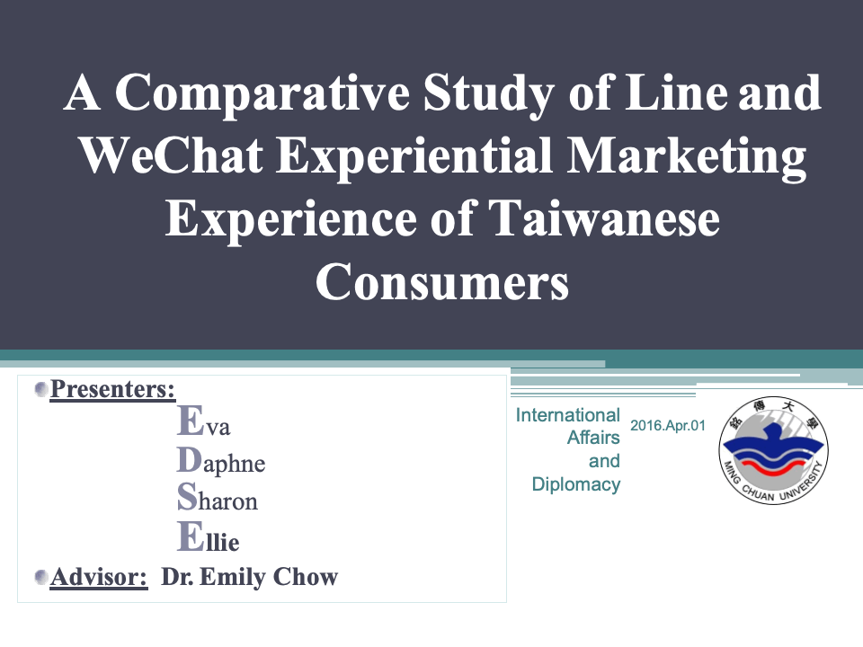

My School Life
在我的學涯生活中，除了學習到專業的學科與充滿精彩的社團活動外，我還參與了許多校外的夏令營、研習營等等，在每一次的活動中，除了學習到與同伴的「團隊合作精神」之外，也激發自己的創造力。

在我的學涯生活中，除了學習到專業的學科與充滿精彩的社團活動外，我還參與了許多校外的夏令營、研習營等等，在每一次的活動中，除了學習到與同伴的「團隊合作精神」之外，也激發自己的創造力。
首先，以課業方面的表現來說，我想我交出了一張還不錯的成績單，也是我比較有自信的一點，我在大學以及研究所時期皆為「書卷獎」畢業，但我並不認為自己是天資聰穎的學生，因此我抱持不放過任何可以學習的機會，養成了自己秉持盡力做到最好的學習動力與求學態度，並靠後天的努力達到自己設定的目標。
Next在我求學的生涯中，除了時時督促自己保持好的成績之外，在校內活動參與方面。我在大學時期參加羽球社與系學會，舉辦過迎新宿營、聖誕晚會、畢業晚會等等活動。在研究所時期，我在成大是校務會議的學生代表，在會議中以學生的立場為全校研究生發聲。我也是研究生學生會的成員之一，除了集結研究生的心聲以及捍衛我們的權利之外，還會舉辦各類的活動，過去我曾負責舉辦一場研究生交流活動，照片中的活動就是由我與兩位組員一同舉辦的交流活動。我對於舉辦活動以及研習營擁有充足的經驗，相信自己未來有能力能與同事一同為公司舉辦各類大大小小的活動。
過去我也積極參與各項校外的研習營、夏令營、講座、社團等活動，為的就是培養自己「主動學習的動力」，人必須要不段學習新的知識才會進步，因此我常常參加課外各種主題的研習營，來增進自己不足的知識。透過參與研習營，除了能吸收各個專業領域的講師們帶給自己新的啟發、累積自己結合理論與實務操作的養分，也能鍛鍊自己對於同一件議題擁有更多客觀面向的「分析力」，除此之外，在每一次成果報告中，也與小組團員激發出許多「創新的想法」，讓我覺得是很棒的成長過程。
| 參與日期 | 活動名稱 | 舉辦單位 |
|---|---|---|
| 2019/8 | 青年學生兩岸關係研習營 | 行政院陸委會 |
| 2019/3 | 「民主社會中言論自由的新挑戰與回應」研討會 | 國立成功大學 |
| 2019/1 | 2019年臺灣的泰國研究研習營 | 臺灣泰國交流協會 |
| 2018/12 | 第二屆南台灣與兩岸關係研討會 | 國立成功大學 |
| 2018/11 | 宗教、暴力與多元文化主義：跨學門之整合討論國際研討會 | 國立成功大學 |
| 2018/11 | 公元前後五百年環南海區域的交流與在地化國際研討會 | 國立成功大學 |
| 2017/4 | 新南向政策國際事務人才培訓營 | 教育部 |
| 2016/7 | WTO及RTA青年研習營 | 中華經濟研究院 |
| 2016/6 | 青年國會研習營 | 立法院 |
| 2016/6 | 青年學生兩岸關係研習營 | 行政院陸委會 |
| 2015/7 | 青年領袖外交事務研習營 | 外交部國策研究院 |
| 2015/10 | 全球化青年公共參與及關懷研習營 | 教育部 |
| 2015/08 | 國際合作與發展研習營 | ICDF國際合作發展 |
| 2015/07 | 國際NGO及社會企業人才培訓營 | 教育部 |
| 2015/07 | 公共事務青年人才培訓計畫 | 教育部 |
| 2015/07 | 港澳台青年知性之旅交流團 | 行政院 |
| 2013/11 | NGO國際事務人才研習營 | 外交部 |


從撰寫論文的過程中，磨鍊出自己擁有獨自思考的能力以及能夠面對壓力的抗壓性。在我大學時期的研究領域中，我學習到如何做基礎的問卷調查研究，並利用SPSS做信度分析，我相信未來能應用於做市場行銷方面的專案分析。另一方面，在我研究所的研究中，雖然我的題目看似只需要關注於中國與柬埔寨的兩國關係，然而，在操作方面也必須考慮到柬埔寨與其他國家的互動性，如比較中國、美國、日本等大國如何對柬埔寨進行拉攏，以及比較其力度與作為如何等等。我相信任何一個企業一定都會有競爭對手，而國家之間的外交角力也會體現於商場之間的爾虞我詐，我認為，對一個企業最重要的一個經營方針無非是了解其對手的弱點，因此應用SWOT的分析模式顯得重要。我認為自己在研究中已經強化了我面對一個研究問題的洞悉力與邏輯思考，我的專長將能貢獻於「競爭者分析」計畫書中的策略小組部門。
| 論文題目 | A Comparative Study of Line and WeChat Experiential Marketing Experience of Taiwanese Consumers |
| 指導教授 | 周宛青 博士 |
| 摘要 | The aim of this study is to find out what different experiences Taiwanese consumers have when they use Line and WeChat, which make them prefer line to WeChat using the experiential marketing model. Experience marketing as defined by Bernd Schmitt is any form of customer-focused marketing activity that creates a connection to customers. In recent years, understanding consumer experiences has become a core task for consumer research. An online survey is conducted to identify the different experiences of Taiwanese Line and WeChat users, followed by detailed analysis of the five categories, namely, sense, feel, think, act, relate marketing of experiences of users with different biological and social backgrounds. Application companies can use the outcome of this study to gain a more in-depth understanding of user experiences in Taiwan and develop effective marketing strategies accordingly. |
| 簡報連結 | https://drive.google.com/file/d/1btI-OPOWNI3j-hu1PJ0Dm3GOIA5Mnj2o/view |
| 論文題目 | 柬埔寨對中國一帶一路倡議之政策選擇與作為:抗衡、扈從、避險或合作 |
| 指導教授 | 宋鎮照 博士 |
| 摘要 | 中國大陸於2013年推出「一帶一路」倡議被外界視為一重大的戰略構想，紛紛認為中國試圖以一帶一路重啟中國的世界核心觀，讓中國重返國際大國舞台，並站穩「大國」角 色的地位。而正當中國推動「一帶一路」並配合中國企業「走出去」發展時，東南亞無疑成為中國邁出區域戰略的首要發展區域，而其中在整個東南亞區域層次中，唯「大湄公河次區域」(GMS)與中國大陸對接，扮演著「紐帶」的角色，因此對中國而言，GM區域便成為關鍵的試驗區。GMS成員國多為發展中國家，普遍缺乏建設基金，導致基礎建設不足、產業發展低落、互聯網發展也遭遇問題，因此當中國「一帶一路」打造「中國—東協」合作升級版倡議時，完全符合柬埔寨的期待，同時其獨特的地緣政治地位對中國而言又具有相當的戰略意義，也因此兩國在利益不相互衝突的情況下便「一拍即合」。 然而，柬埔寨是一個貧窮落後的「小國」，而且四面受敵，在區域外，不僅有美國、日本、歐盟與中國等大國之間存在根本性衝突，且受外部形勢的影響，柬埔寨內部的政治局勢也極不穩定。因此，從過去以來柬埔寨在內外關係上都極為依賴中國，更被外界視為中國的殖民地。固然，中柬關係緊密屬實，筆者認為洪森在制定外交政策時也須考量於國家「內三角」對「一帶一路」的反應以及是否能在「外三角」的層次中尋求更保有其主權的國家利益。因而，在本研究中，將打破現實主義中總是以大國立場來看待國際關係的互動，以柬埔寨「小國」的視角來分析其外交政策的制定是否已經採取「動態式」的轉向，從過去對中國完全「扈從」的刻板印象轉而靈活的應用「避險」的外交手腕，並透過自身的優勢與其他大國發展出更多的契機。 |
| 簡報連結 |  https://drive.google.com/file/d/16Md2GLpFRmDvZ6T8YkpEs91MlwV7bl36/view https://drive.google.com/file/d/16Md2GLpFRmDvZ6T8YkpEs91MlwV7bl36/view |